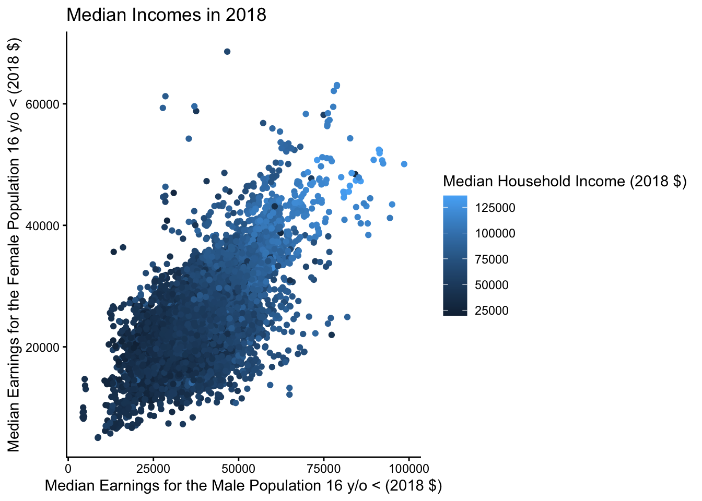

library(gtsummary)
library(tidyverse)
library(here)
library(ggplot2)Quarto Final Project
DATA
The dataset childcare_costs comes from the National Database of Childcare Prices (NDCP). It is the most comprehensive federal source of childcare prices at the county level. The database offers childcare price data by childcare provider type, age of children, and county characteristics. The data available is from 2008 to 2018.
Table
- shows the data association by each characteristics
childcare_costs <- read_csv(here::here("childcare_costs.csv"))
table1 <- tbl_summary(
childcare_costs,
by = study_year,
include = c(unr_16,funr_16,unr_20to64,
funr_20to64,flfpr_20to64,flfpr_20to64_6to17,pr_f,one_race_b),
label= list(unr_16 ~ "Unemployment rate of the population ages 16 y/o <",
funr_16 ~ "Unemployment rate of the female population ages 16 y/o <",
unr_20to64 ~ "Unemployment rate of the population ages 20 - 64 y/o",
funr_20to64 ~ "Unemployment rate of the female population ages 20 - 64 y/o",
flfpr_20to64 ~ "Labor force participation rate of the female population ages 20 - 64 y/o",
flfpr_20to64_6to17 ~ "Labor force participation rate of the female population ages 20 - 64 y/o who have children between 6 - 17 y/o",
pr_f ~ "Poverty rate for families",
one_race_b ~ "Percent of population that identifies as being one race and being only Black or African American"),
missing_text = "Missing"
)
table1| Characteristic | 2008 N = 3,1421 |
2009 N = 3,1431 |
2010 N = 3,1431 |
2011 N = 3,1431 |
2012 N = 3,1431 |
2013 N = 3,1431 |
2014 N = 3,1421 |
2015 N = 3,1421 |
2016 N = 3,1421 |
2017 N = 3,1421 |
2018 N = 3,1421 |
|---|---|---|---|---|---|---|---|---|---|---|---|
| Unemployment rate of the population ages 16 y/o < | 5.9 (4.5, 7.6) | 6.7 (5.0, 8.5) | 7.3 (5.4, 9.3) | 7.9 (5.9, 10.0) | 8.4 (6.2, 10.7) | 8.8 (6.4, 11.2) | 8.3 (6.1, 10.7) | 7.5 (5.5, 9.7) | 6.8 (5.0, 8.8) | 6.1 (4.4, 7.8) | 5.5 (4.0, 7.1) |
| Unemployment rate of the female population ages 16 y/o < | 5.8 (4.2, 7.7) | 6.4 (4.6, 8.2) | 6.7 (4.8, 8.8) | 7.2 (5.1, 9.5) | 7.6 (5.4, 10.1) | 7.9 (5.7, 10.6) | 7.6 (5.5, 10.1) | 7.0 (5.0, 9.3) | 6.4 (4.5, 8.4) | 5.7 (4.0, 7.6) | 5.1 (3.6, 6.9) |
| Unemployment rate of the population ages 20 - 64 y/o | 5.3 (3.9, 6.8) | 6.0 (4.4, 7.7) | 6.6 (4.8, 8.5) | 7.2 (5.2, 9.3) | 7.7 (5.6, 10.0) | 8.1 (5.9, 10.5) | 7.7 (5.5, 10.0) | 7.0 (5.0, 9.2) | 6.3 (4.6, 8.2) | 5.6 (4.0, 7.3) | 5.0 (3.6, 6.7) |
| Unemployment rate of the female population ages 20 - 64 y/o | 5.1 (3.6, 6.9) | 5.7 (4.0, 7.5) | 6.0 (4.3, 8.1) | 6.5 (4.6, 8.8) | 6.9 (4.9, 9.4) | 7.3 (5.2, 9.9) | 7.1 (5.0, 9.4) | 6.5 (4.6, 8.7) | 5.9 (4.1, 7.9) | 5.3 (3.6, 7.1) | 4.7 (3.3, 6.4) |
| Labor force participation rate of the female population ages 20 - 64 y/o | 72 (67, 76) | 71 (66, 76) | 71 (66, 76) | 71 (66, 76) | 71 (66, 76) | 71 (65, 76) | 70 (65, 75) | 70 (64, 75) | 70 (64, 75) | 70 (64, 75) | 70 (64, 75) |
| Labor force participation rate of the female population ages 20 - 64 y/o who have children between 6 - 17 y/o | 82 (77, 87) | 81 (77, 86) | 81 (76, 85) | 80 (75, 85) | 80 (75, 84) | 79 (74, 84) | 78 (74, 83) | 78 (73, 83) | 78 (73, 83) | 78 (73, 83) | 79 (74, 83) |
| Poverty rate for families | 10.3 (7.2, 14.0) | 10.5 (7.4, 14.1) | 10.4 (7.4, 14.1) | 10.8 (7.6, 14.4) | 11.1 (7.9, 14.9) | 11.5 (8.2, 15.2) | 11.5 (8.3, 15.3) | 11.3 (8.1, 15.1) | 11.0 (7.8, 14.8) | 10.7 (7.6, 14.3) | 10.3 (7.3, 13.9) |
| Percent of population that identifies as being one race and being only Black or African American | 2 (0, 10) | 2 (0, 10) | 2 (1, 10) | 2 (1, 10) | 2 (1, 10) | 2 (1, 10) | 2 (1, 10) | 2 (1, 10) | 2 (1, 10) | 2 (1, 10) | 2 (1, 10) |
| 1 Median (Q1, Q3) | |||||||||||
The median (IQR) for the unemployment rate of the population ages 20-64 years old in 2018 is 5.0 (3.6, 6.7)
Table
- shows the univariate association between each labor market predictor and median household income.
uv_regression <- tbl_uvregression(
childcare_costs,
y = mhi_2018,
include = c(
unr_16,funr_16,unr_20to64,
funr_20to64,flfpr_20to64,flfpr_20to64_6to17,pr_f,one_race_b),
method = lm)|>
bold_labels()
uv_regression| Characteristic | N | Beta | 95% CI | p-value |
|---|---|---|---|---|
| unr_16 | 34,567 | -1,429 | -1,466, -1,393 | <0.001 |
| funr_16 | 34,567 | -1,281 | -1,318, -1,244 | <0.001 |
| unr_20to64 | 34,567 | -1,482 | -1,520, -1,445 | <0.001 |
| funr_20to64 | 34,567 | -1,305 | -1,343, -1,267 | <0.001 |
| flfpr_20to64 | 34,567 | 898 | 882, 913 | <0.001 |
| flfpr_20to64_6to17 | 34,567 | 418 | 402, 434 | <0.001 |
| pr_f | 34,567 | -1,654 | -1,672, -1,637 | <0.001 |
| one_race_b | 34,567 | -222 | -231, -213 | <0.001 |
| Abbreviation: CI = Confidence Interval | ||||
The regression for the Unemployment rate of the population aged 16 years old or older is -1,429 (95% CI -1,466, -1,393; p<0.001)
Figure
- shows a relationship between median earnings by gender in scatterform
scatterplot <- ggplot(childcare_costs,
aes(x = mme_2018, y = fme_2018)) +
geom_point(aes(colour = mhi_2018)) +
labs(
x = "Median Earnings for the Male Population 16 y/o < (2018 $)",
y = "Median Earnings for the Female Population 16 y/o < (2018 $)",
color = "Median Household Income (2018 $)",
title = "Median Incomes in 2018"
) +
theme_classic()
scatterplot
ggsave(plot= scatterplot, filename = here::here("project-image.png"))summarize_var <- function(data, variable) {
data |>
summarize(
n = sum(!is.na({{variable}})),
mean = mean({{ variable }}, na.rm = TRUE),
)
}
summarize_var(childcare_costs, mhi_2018)# A tibble: 1 × 2
n mean
<int> <dbl>
1 34567 50447.summarize_var(childcare_costs, unr_20to64)# A tibble: 1 × 2
n mean
<int> <dbl>
1 34567 6.90summarize_var(childcare_costs, fme_2018)# A tibble: 1 × 2
n mean
<int> <dbl>
1 34567 23475.